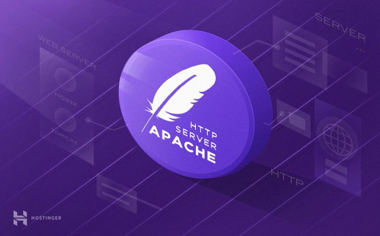

EQUPO1  CONCEPTO. Apache es un software especializado en ofrecer servicios de servidor web. Es versátil, ligero y muy útil, además de ser completamente gratuito y de código abierto. Su popularidad es tal que, actualmente, cerca del 50% de las páginas web de todo el mundo se ejecutan en un servidor de este tipo. HISTORIA. La historia de Apache se remonta a febrero de 1995, donde empieza el proyecto del grupo Apache, el cual está basado en el servidor Apache httpd de la aplicación original de NCSA. El desarrollo de esta aplicación original se estancó por algún tiempo tras la marcha de Rob McCool. Fueron Brian Behlendorf y Cliff Skolnick quienes a través de una lista de correo coordinaron el trabajo y lograron establecer un espacio compartido de libre acceso para los desarrolladores. En 1999, se formó la Fundación de Software Apache (Apache Software Foundation) para obtener apoyo financiero, organizativo y legal para el servidor. CARACTERISTICAS. Es gratuito y de fuente abierta. Instalación y configuración sencilla. Altamente extensible y adaptable mediante módulos. Funciones incorporadas para autentificación y validación de users. Soporte para lenguajes como Perl, PHP y Python.